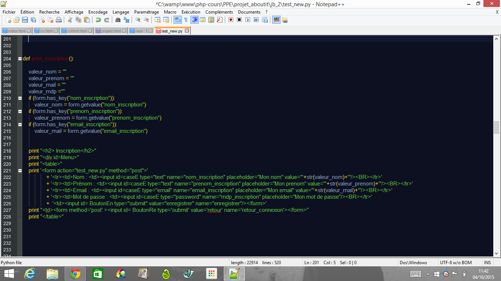
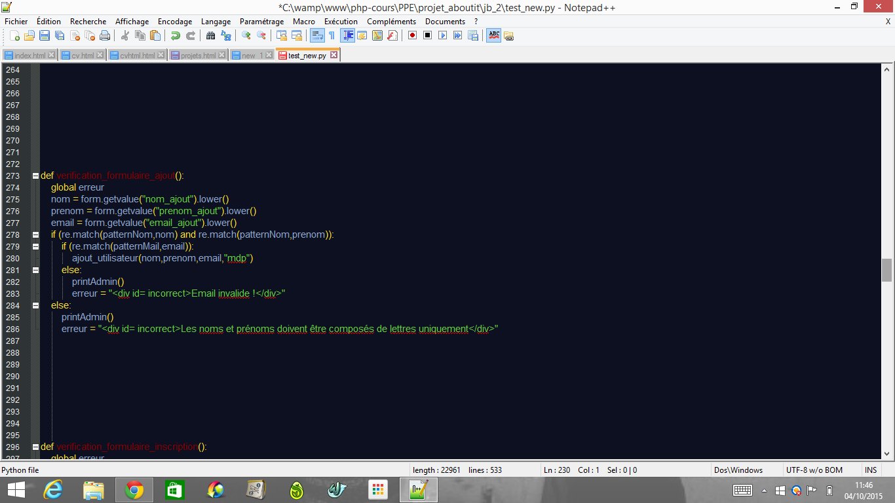
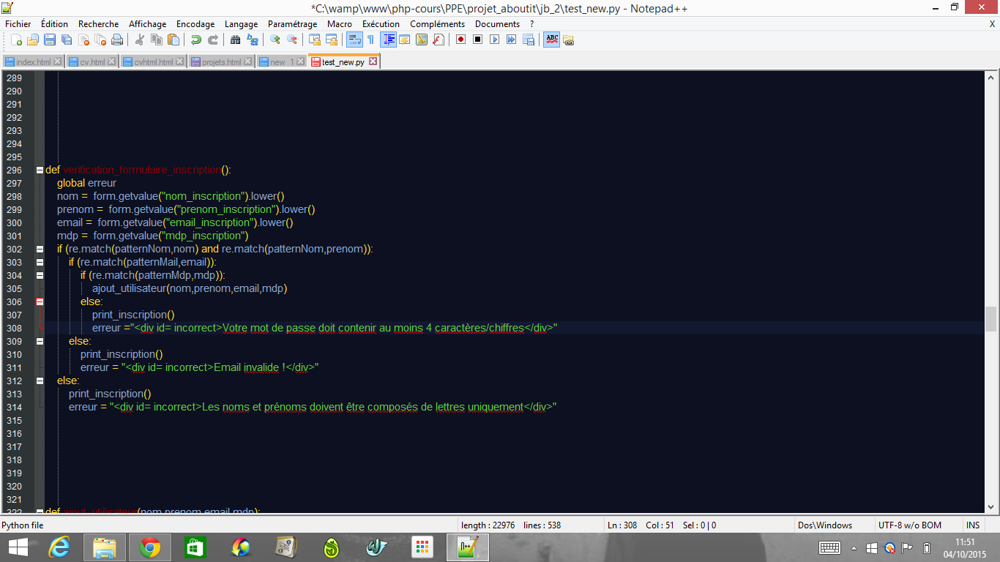

Applcation Web codée en python
Contexte Solution proposée Structure de l'application Conclusion Compétences validéesLa M2L (Maison des Ligues de Lauraine) est une association regroupant l'ensemble des ligues sportives de Lauraine. Monsieur Lefut est l'administrateur de l'actuelle application web de la M2L, application dont l'objectif est de pouvoir recenser l'ensemble des informations sur les membres de la M2L.
Cette application rudimentaire n’est pas accessible aux utilisateurs, et est rédhibitoire sur le plan de la sécurité. De plus, il perd depuis des années un temps précieux à changer les adresses e-mail lui-même à la demande des utilisateurs. Son grand rêve serait qu’ils puissent changer eux-mêmes leur adresse e-mail et choisir leur mot de passe. Monsieur Lefut a décidé de faire évoluer cette application en recourant à une équipe de prestataires.
Application exclusivement codée en langage Python
Afin de répondre aux attentes du client, nous avons crée une application Web permettant à un utilisateur de :
En tant qu'administrateur, monsieur Lefut aura de nombreuses possibilités :
L'une des exigence principales du projet était l'augmentation de la sécurité de l'application, un certains nombres de mesures ont été mises en place :
L'application web tient sur une et une seule page. Pour ce faire, elle est composée de nombreuses fonctions qui s'appelent l'une l'autre.
La fonction test_donnees_formulaire est la fonction principale du script. Elle est la seule à être lancée au départ puis ce sera son rôle que d'appeler les autres fonctions. Il existe deux types de fonctions:
Le mot "print" placé au début du nom de la fonction précise que celle-ci est une fontion d'affichage. Son rôle sera alors d'afficher un certain texte/formulaire en fonction de celle-ci. Un exemple ici avec la fonction print_inscription 
Il s'agit des fonctions de traitements de connées dont le rôle est de récuperer les données transmises via les formulaire, de vérifier leur conformité et, le cas échéant, d'afficher les erreurs. Exemple avec la fonction verification_formulaire_ajout 
La conformité des données envoyées par l'utilisateur est garantie par l'utilisation de Regex qui emêchent ce dernier de placer des caractères dangereux (injections sql) dans le formulaire. Exemple de test avec les regex :
Et voici les différets pattern utilisés pour les Regex :
| Intitulés | Compétences |
|---|---|
| A1.1.1 | Analyse du cahier des charges d'un service à produire |
| A1.1.2 | Étude de l'impact de l'intégration d'un service sur le système informatique |
| A1.1.3 | Étude des exigences liées à la qualité attendue d'un service |
| A1.2.3 | Évaluation des risques liés à l'utilisation d'un service |
| A1.2.4 | Détermination des tests nécessaires à la validation d'un service |
| A1.3.2 | Définition des éléments nécessaires à la continuité d'un service |
| A1.4.1 | Définition des niveaux d'habilitation associés à un service |
| 4.1.1 | Proposition d'une solution applicative |
| 4.1.2 | Conception ou adaptation de l'interface utilisateur d'une solution applicative |
| A4.1.6 | Gestion d'environnements de développement et de test |
| A4.1.1 | Rédaction d'une documentation d'utilisation |